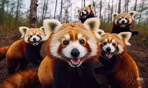
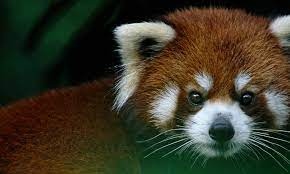

More about red pandas
Who is red pandas?
Where are they living?

The home of red pandas is western China and the eastern Himalayas. At the moment, most of them
live in captivity, under human supervision. In this way, the panda's life is kept safe.
Red pandas in the wildlife
Why are they extinting?

Most red pandas die because their home is being destroyed.
Recently, deforestation has not stopped, but has only gained momentum. The pandas cannot be
rescued in time and are dying. Also, some of them die because of poaching. People like the
beautiful red fur. Now red pandas are in the group of endangered species (EN).